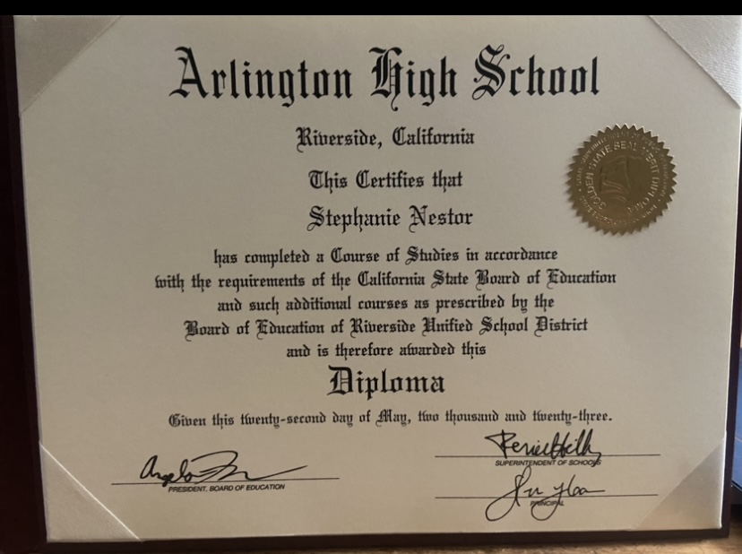
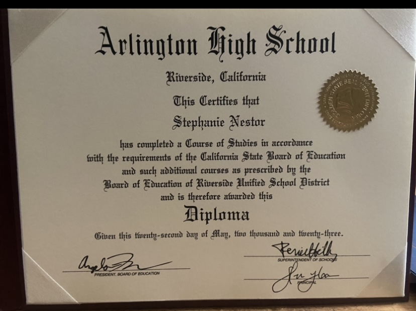
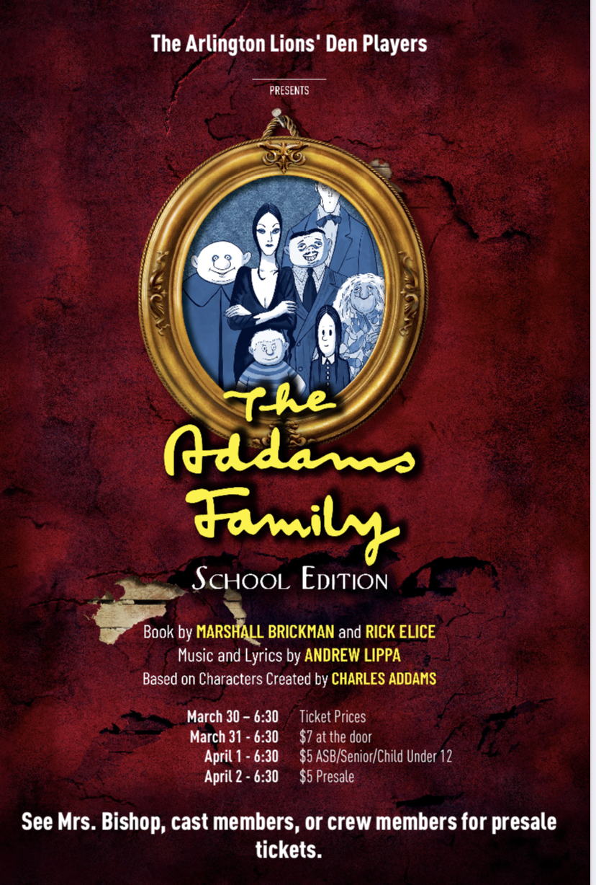
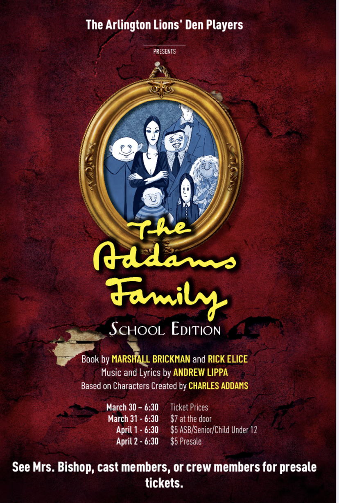
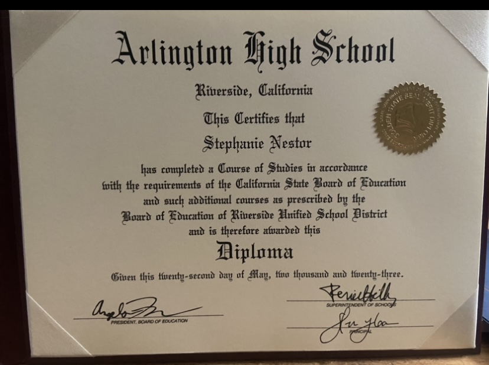
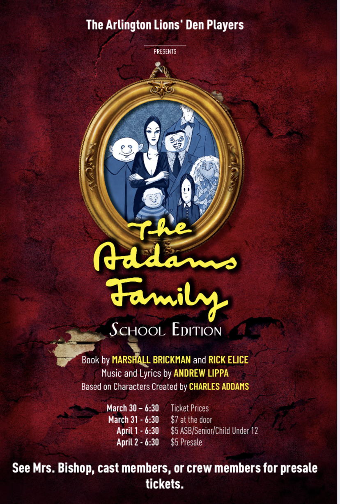

Stephanie Nestor
Hi my name is Stephanie. I am an undergraduate in the University of California Riverside(UCR). Currently I am an undeclared CHASS major because I am trying to decide on my major that will lead to my future career. In order to decide on my major I am taking different classes between biology and econ to get a general idea of those fields and the type of careers they have. I plan to decide my major by the end of this year in order to graduate in four years or less. I am located mainly in Riverside with my family and have lived in Riverside for most of life.
Some skills I have are being calm and patient when there is a situation occurring, being able to adapt to my environment. I have great time management skills to get things done when needed, a great listener along with being able to work with others and having a strong work ethic. Although I do have some anxiety while talking in front of a large group of people. But this is because I want to show the best of me and show how reliable I am for both work and personal. Because I believe mental health is very important and want to give a lending ear to anyone who is having a hard time. While in work I want people to be able to rely on me with important projects or work which can then lead to opportunities in the future. Some skills I am working on improving are using different programs, for example Word and google sheets, and improving communication skills to be able to speak to large groups of individuals when needed.
I am currently also currently working on one of my main goals, I hope to accomplish in my undergraduate years. This is to have the opportunity to study abroad which I believe could give me many different opportunities, meet new people, while working on getting my degree. Being able to travel has always been one of my goals to be able to gain new experiences around the world. So, I am working on finding out more about studying abroad opportunities and to be prepared for when we are eligible to begin applying in my sophomore year because freshmen are not eligible. In order to prepare I am creating a plan to also have the money needed to go. My latest plan is to apply to different scholarships, while saving money, and hopefully obtain a job that will provide the money to study abroad. Another one of my main goals is to build my resume to have better chances of landing a job in the future where I have a stable income to support myself. Because currently I do not have any job experience but have volunteered. This is mainly because I was not very active in school and really only focused on my grades without having any goals set for myself in the future. After coming to college and seeing how different things are with many types of clubs, organizations, internships, and etc., I realized how narrow minded I was and want to build my resume to be prepared for the future. In order to not fall behind.
Experience
Arlington Highschool
• Early Academic Outreach Program(EAOP)
• A member of the JROTC Colorguard team
• A member of the theater club
• A member of the GSA club
Volunteer
• Assistant stage manager for theater
• Managed the spotlights for shows
Education
UC Riverside
University of California Riverside
University of California Riverside
Portfolio
.jpg) 

.png) 


